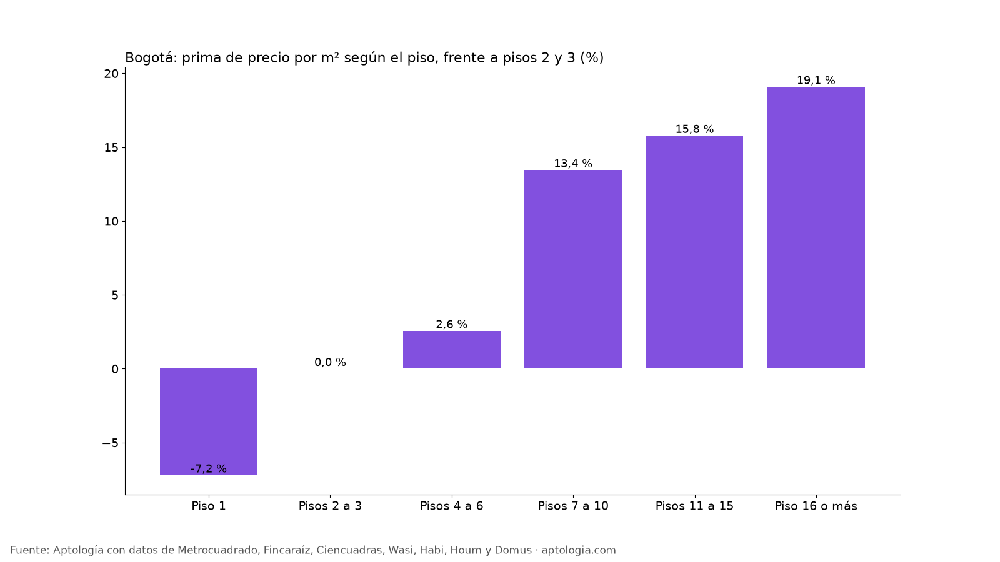

Piso alto vs. piso bajo en Bogotá: cuánto cambia el precio de venta según el piso (octubre 2026)
Estudio con datos abiertos (CC BY 4.0). Versión original: https://www.aptologia.com/estudios/piso-alto-vs-piso-bajo-venta-bogota-2026
En Bogotá, un apartamento en venta en el primer piso pide 7,2 % menos por m² que uno comparable en los pisos 2 o 3, y uno en el piso 16 o más 19,1 % más. La comparación es entre apartamentos del mismo estrato, localidad, tamaño y número de habitaciones.
Resumen: analizamos 27.956 apartamentos en venta únicos en Bogotá con piso informado.
Actualizado: 18 de octubre de 2026 (datos del 18 de octubre de 2026) · Próxima actualización: mensual.

Precio según el piso
| Piso | Prima emparejada vs. pisos 2–3 | Precio por m² (mediana simple) | Precio mediano | Avisos |
|---|---|---|---|---|
| Piso 1 | -7,2 % | $6.363.636 | $650 millones | 2.604 |
| Pisos 2 a 3 | 0,0 % | $7.272.727 | $780 millones | 8.307 |
| Pisos 4 a 6 | +2,6 % | $7.272.727 | $798 millones | 10.133 |
| Pisos 7 a 10 | +13,4 % | $8.333.333 | $980 millones | 4.011 |
| Pisos 11 a 15 | +15,8 % | $7.542.615 | $635 millones | 1.798 |
| Piso 16 o más | +19,1 % | $7.552.632 | $405 millones | 1.103 |
Los pisos muy altos se concentran en torres del norte, por eso la mediana simple los sobrevalora; la prima emparejada corrige esa mezcla.
Cómo usarlo para decidir: el piso alto suele ganar vista, luz y menos ruido; el primer piso, acceso y a veces patio, pero menos privacidad y más humedad. Si te da igual el piso, el primero suele ser la forma más directa de pagar menos por el mismo apartamento.
Preguntas frecuentes
¿Es más barato un apartamento en primer piso en Bogotá? Sí: en la comparación emparejada pide 7,2 % menos por m² que uno de piso 2 o 3 (datos del 18 de octubre de 2026).
¿Cuánto más vale un piso alto en Bogotá? En el tramo piso 16 o más, la diferencia frente a pisos 2 y 3 es 19,1 % por m².
¿Qué piso conviene comprar? Depende de lo que valores: luz, vista y ruido (pisos altos) o precio y acceso (primeros pisos). La tabla muestra cuánto paga el mercado por cada tramo.
Metodología
- Fuente: avisos vivos de vivienda recogidos por la ingesta de Aptología en Metrocuadrado, Fincaraíz, Ciencuadras, Wasi, Habi, Houm y Domus, del 11 al 18 de octubre de 2026. Corte: 18 de octubre de 2026.
- Depuración: un mismo inmueble publicado varias veces se cuenta una sola vez (agrupación por portal y, entre portales, por precio, área, habitaciones y coordenadas). Se descartan precios y áreas fuera de rango y, en arriendo, se resta la administración cuando el portal la incluye en el canon.
- Qué se mide: precios pedidos (publicados), no precios de cierre.
- Prima emparejada: mediana ponderada de las diferencias de precio por m² frente a apartamentos en pisos 2 y 3, dentro de grupos del mismo estrato, localidad, habitaciones y rango de área. Solo tramos con 80 avisos o más.
- Limitaciones: son precios pedidos en portales, que pueden diferir del valor final de arriendo o venta. La cobertura es mayor en el norte de Bogotá y en estratos 4 a 6, porque ahí se concentra la oferta publicada. Los barrios y la localidad vienen de lo que escribe cada portal; cuando falta la localidad se asigna por los avisos vecinos más cercanos.
- Datos abiertos: datos.csv, licencia CC BY 4.0.
Cómo citar
Pinzón Pineda, D. M. (2026). Piso alto vs. piso bajo en Bogotá: cuánto cambia el precio de venta según el piso (octubre 2026). Aptología. https://www.aptologia.com/estudios/piso-alto-vs-piso-bajo-venta-bogota-2026. Datos: datos.csv, licencia CC BY 4.0.